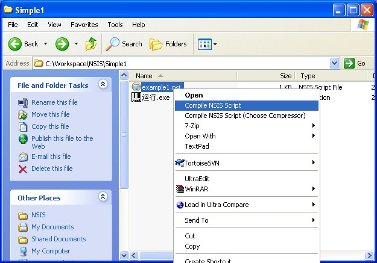

安装程序制作系统NSIS(Nullsoft Scriptable Install System)
NSIS 是一个开源免费的 Windows 安装程序制作系统， 通过使用 NSIS 的脚本语言可以配置安装程序所需的几乎所有功能，比如修改系统设置，读写注册表，文件包解压， 卸载等等。其功能非常强大，产生的安装文件却很小，默认配置只有 34KB。
NSIS 主页 http://nsis.sourceforge.net/
学习NSIS主要就是学它的脚本的编写，最快的方法当然是看它的脚本例子，遇到不知道的就查它的用户手册。安装NSIS以后，两样您都有了。
先看个最简单的例子，NSIS的脚本文件以 .nsi 为扩展名。

http://www.blogjava.net/Images/OutliningIndicators/None.gif
; 起头的一行是注释http://www.blogjava.net/Images/OutliningIndicators/None.gif
http://www.blogjava.net/Images/OutliningIndicators/None.gif
; 安装程序的名称http://www.blogjava.net/Images/OutliningIndicators/None.gif
Name " 例子 "http://www.blogjava.net/Images/OutliningIndicators/None.gif
http://www.blogjava.net/Images/OutliningIndicators/None.gif
; 输出安装程序启动文件http://www.blogjava.net/Images/OutliningIndicators/None.gif
OutFile " 安装.exe "http://www.blogjava.net/Images/OutliningIndicators/None.gif
http://www.blogjava.net/Images/OutliningIndicators/None.gif
; 默认安装目录，$PROGRAMFILES指示Windows的Programm Files目录http://www.blogjava.net/Images/OutliningIndicators/None.gif
InstallDir $PROGRAMFILES\例子http://www.blogjava.net/Images/OutliningIndicators/None.gif
http://www.blogjava.net/Images/OutliningIndicators/None.gif
; 安装页面, 比如许可证说明页面等等http://www.blogjava.net/Images/OutliningIndicators/None.gif
http://www.blogjava.net/Images/OutliningIndicators/None.gif
; directory表示选择安装目录的页面http://www.blogjava.net/Images/OutliningIndicators/None.gif
Page directoryhttp://www.blogjava.net/Images/OutliningIndicators/None.gif
; instfiles 表示安装的页面http://www.blogjava.net/Images/OutliningIndicators/None.gif
Page instfileshttp://www.blogjava.net/Images/OutliningIndicators/None.gif
http://www.blogjava.net/Images/OutliningIndicators/None.gif
; 具体要装的东西, 比如拷贝文件http://www.blogjava.net/Images/OutliningIndicators/None.gif
Section "" ; 没有components page, 名称不重要http://www.blogjava.net/Images/OutliningIndicators/None.gif
; 指定输出目录http://www.blogjava.net/Images/OutliningIndicators/None.gif
SetOutPath $INSTDIRhttp://www.blogjava.net/Images/OutliningIndicators/None.gif
; 拷贝一个文件http://www.blogjava.net/Images/OutliningIndicators/None.gif
File 运行.exehttp://www.blogjava.net/Images/OutliningIndicators/None.gif
SectionEnd这个安装程序只拷贝了文件 运行.exe 到安装目录下了。编译这个脚本的时候， 运行.exe要在脚本的同一目录下。NSIS会把 运行.exe做在 安装.exe文件里面，也就是说发布的时候，您只需要提供 安装.exe。
怎样编译NSIS的脚本呢？ 非常简单。安装NSIS后，您的文件右键菜单多出两个命令Compile NSIS Script和Compile NSIS Script(Choose Compressor), 要选中一个NSIS的脚本才行。

http://www.blogjava.net/images/blogjava_net/xilaile/nsis1.jpg
您只要点一下Compile NSIS Script就OK了，NSIS的Compiler会生成 安装.exe。Compile NSIS Script(Choose Compressor)可以让您选择压缩的方式，NSIS目前支持ZLib, BZip2, LZMA三种方式，大部分情况下LZMA会得到比较好的结果。
当然这个例子好比Java的Hello World程序，只是演示了NSIS最简单的使用过程。NSIS还有很多有意思的功能有待您去尝试掌握，举个Java程序员有兴趣的例子， 制作Java程序的EXE启动文件的NSIS脚本。
转载请保留 http://www.blogjava.net/xilaile/archive/2007/03/29/107294.html